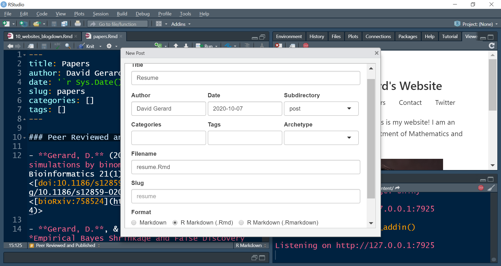
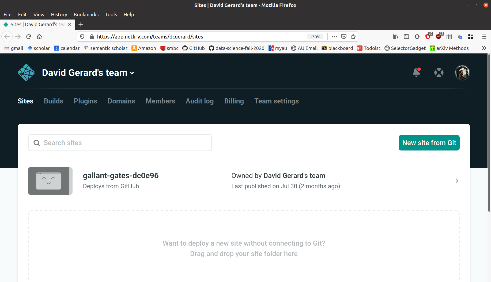
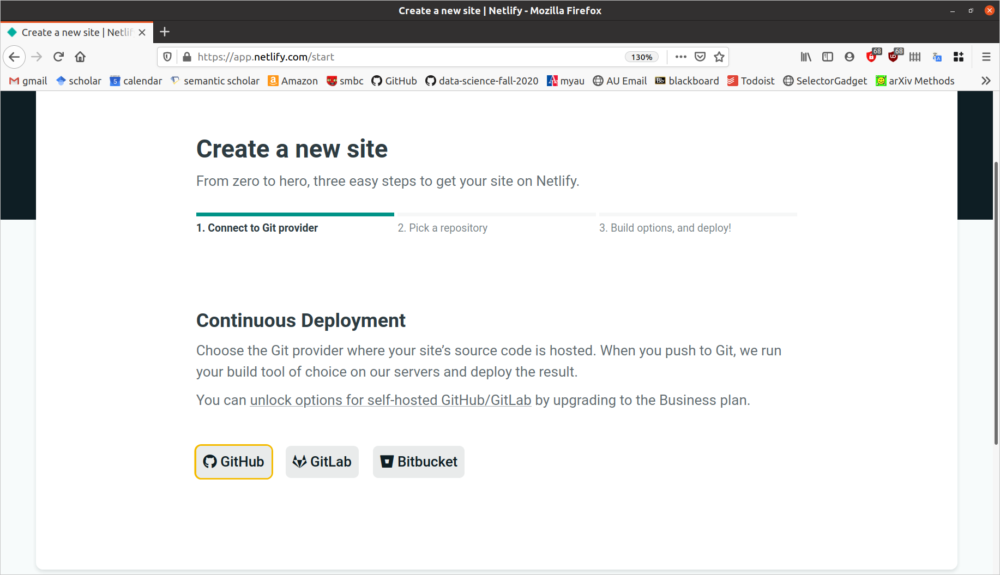
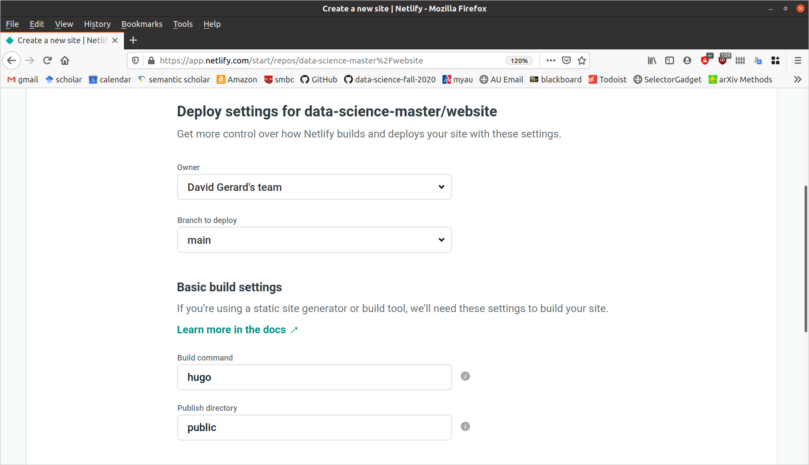

install.packages("blogdown")Create your own Website with Blogdown
Learning Objectives
- Learn how to create a website with R Markdown.
- Create a personal or project website.
- Chapters 1 and 2, and section 3.1 of blogdown: Creating Websites with R Markdown
Motivation
- You should have a personal website
- Makes you stand out compared to a LinkedIn page that only boring HR folks seem to care about.
- You can post links to class projects and research projects so future employers can tell that you’re legit.
- My website is a little outdated (I made it back in grad school), but it has still helped me during my career: https://dcgerard.github.io/
- You can create a project website:
- This facilitates open-source collaboration between researchers.
- E.g. I used such a website for notekeeping and collaborating with my PI during my postdoc: http://dcgerard.github.io/succotash_sims/analysis/index.html
- Other uses:
- Advertise specific software/papers https://dcgerard.github.io/updog/.
- Create a blog (say, on data science projects) https://dcgerard.github.io/research/2018/03/16/updog.html.
Installation
We’ll use the blogdown R package to build a website, so make sure you have it installed:
Hugo is a software that builds a website for you. Blogdown uses Hugo to make clean-looking websites. You can install it by running the following in R:
blogdown::install_hugo()
Getting started
Set your working directory to the location on your local machine where you want to save your website. Do this via > Session > Set Working Directory > Choose Directory…
Run the following in your R consul:
blogdown::new_site()
This will populate a bunch of folders containing the contents of your website.
The
public/folder contains the contents of your website. You will be able to upload everything in thepublic/folder to a host to publish your website online.The other folders contain files used to make the files in
public/You can view your website via
Addins > Serve Site
A window with a preview of the website will pop up.
If you don’t want to use the R Studio addins, you can always just run the following to build your site:
blogdown::build_site()
Choosing a Theme
There are tons of themes available on the Hugo website: https://themes.gohugo.io/
The steps to installing a theme are:
- Find the GitHub username/reponame for for a theme you are interested in. On the hugo themes website you can usually find this by clicking on “homepage”.
- While creating your site, instead of just running
blogdown::new_site(), runblogdown::new_site(theme = "username/reponame").
For example:
Suppose I want to use the Fuji theme: https://themes.gohugo.io/hugo-theme-fuji/
I need to go to its homepage: https://github.com/amzrk2/hugo-theme-fuji/
Then, when I create my website, I run
blogdown::new_site(theme = "amzrk2/hugo-theme-fuji")
Note that the more complicated the theme, the more difficult it is to maintain.
The blogdown folks recommend first trying out these simple themes:
Editing your website
When you are using “Addins > Serve Site”, everytime you make an edit to an R Markdown file and save that file, the website will reload with the changes. So there is no need to continuously reload the website.
Blogdown uses Hugo to build a website.
Each hugo directory consists of three things that you need to consider
- A configuration file,
config.toml - A series of Markdown files in the “content” folder.
- A public folder, which is the website that hugo generates. You can upload the public folder to any static website host to publish your website.
- A configuration file,
config.toml
Most Hugo sites contain a
config.tomlfile, where “toml” stands for “Tom’s Obvious, Minimal Language”TOML files consist of
key = valuepairs, where thekeyis the variable and thevalueis the assigned variable. For exampleauthor = "David Gerard"You can usually just edit the TOML file of the theme that you have downloaded.
The double brackets in a TOML file are used in Hugo to denote a menu. So, for example
[[menu.main]] name = "Home" url = "https://nanx.me" weight = 1 [[menu.main]] name = "GitHub" url = "https://github.com/nanxstats" weight = 2is used to define the items in the default main menu of the Tanka theme.
The single brackets in a TOML file are used in Hugo to denote a collection of related options. E.g.
[params] author = "David Gerard" dateFormat = "2020/10/10"will set options under
[params]
content/
This folder is where you place R Markdown files. These R Markdown files will be converted to HTML files.
To add a new page to “content”, click on
Addins > New Post
You can then choose the name of the file, whether you are working with a Markdown file (no R, just formatted text) or an R Markdown file, and make some additonal formatting options for the page.
You can change the page name to something different from the default.
For example, if you choose the name “resume”, then the default is that the location of the HTML file in the “public” folder will be “resume/index.html”.
- This is instead of what you would assume to be the case, e.g. “resume.html” (NOT DONE).

The big thing for you is when you are linking to a particular page, you need to link to the location “resume/index.html”, not to “resume.html”. E.g.
Publishing your website
In principal, you can upload your “public” folder to any host to deploy your webiste.
We will discuss how to publish your website using Netlify. Netlify will generate the “public” folder from your source, so you do not need to upload it.
Initialize a git repository in your website directory. Add all of the files not in the “public” folder and commit them. You can exclude all files in “public” by adding a file called “.gitignore” in your website directory that contains the following code:
publicYou can automatically create this file via running the following in the terminal
echo "public" > .gitignoreYou can add everything then to the stage via
git add --allCreate a repo on GitHub that will contain the source for your website. Make sure this is a public repository.
Link the remote to your local and push your changes to the remote.
Sign up for a new account on Netlify through your GitHub login: https://app.netlify.com/signup
On the netflify homepage, then click on “New Site from Git”

Click on “GitHub” when it asks where to create a new site from

Follow the prompts to choose the repository where the website source exists, authorizing Netlify at the appropriate prompt.
Your build settings should look something like this:

Click on “Deploy Site”
Netlify should give you an automatically generated URL where you website is deployed. E.g. mine is deployed to https://loving-haibt-448d60.netlify.app/
You can set up a custom domain by following the links on Netlify. A custom domain name is only about $10–$15 per year.
You can also get a free subdomain from rbind: https://support.rbind.io/about/
After setting up Netlify and linking it to your GitHub repo, whenever you push changes to GitHub, Netlify will automatically deploy those changes.
One of my students made a very nice website for herself: https://ruiqi3239sun.netlify.app/